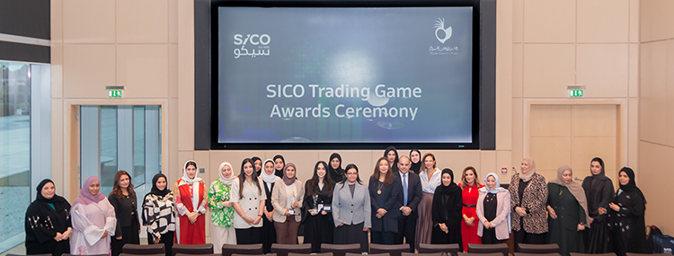
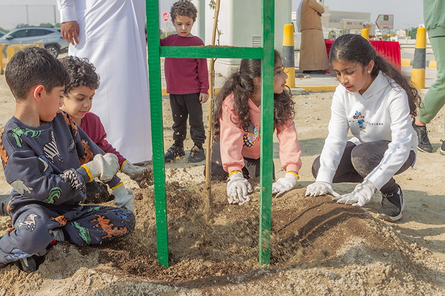
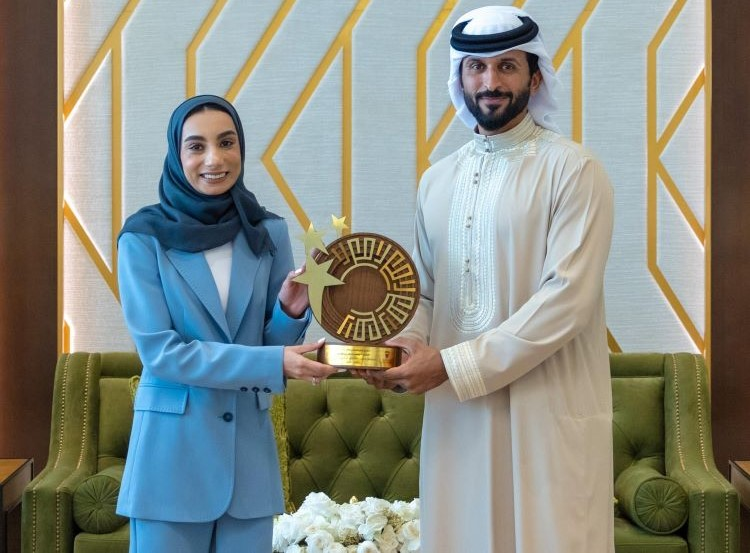
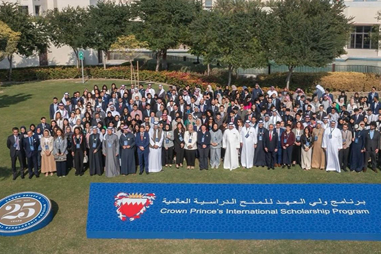
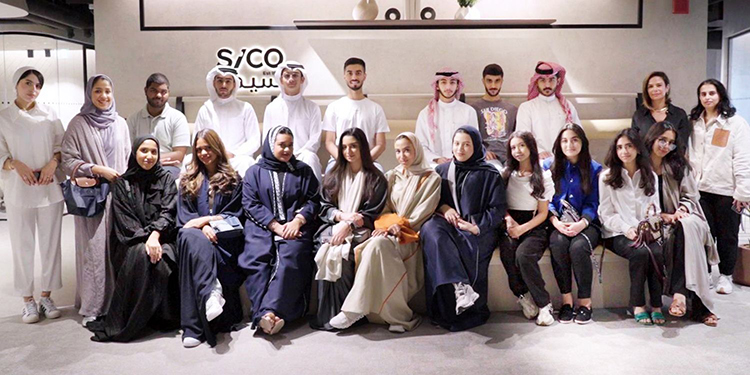
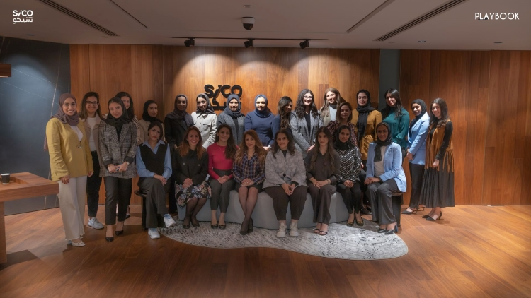

SICO in collaboration with the Supreme Council of Women (SCW), successfully concluded the "Trading in Financial Markets" programme, empowering 44 Bahraini women with valuable knowledge and experience in global financial market trading. The programme covered trading fundamentals, various types of investment instruments, stock market analysis, developing trading strategies, and risk management.
The programme's winners were Fatima Ashoor for achieving the highest P&L, Fatima Alyaqoot for achieving the highest risk-adjusted return, and Maryam Alkarrani for achieving the highest win rate. The winners received several prizes, including the opening of an account on the trading platform, SICO LIVE, with a cash amount to support the initiation of their trading.

Marking SICO’s fourth tree-planting effort, it reaffirmed its committed to playing a role in expanding green spaces in Bahrain with SICO’s team and their families collaborating to fight against climate change. This involves generating oxygen, absorbing carbon dioxide, enhancing air quality, promoting biodiversity, conserving soil, and contributing to Bahrain’s target of achieving net-zero carbon emissions by 2060.
SICO in collaboration with the Supreme Council for Women (SCW) and CFA Society - Bahrain launched the second round of Women in Investment (WIM) Programme, which marks the commencement of a flagship programme focused on developing women in the investment management field. The training will be delivered by the Bahrain Institute of Banking & Finance (BIBF) as the knowledge partner.
Twenty women will be selected to embark on a transformative learning journey, which will encompass a mix of engaging interactive workshops and insightful fireside sessions, providing participants with the rare opportunity to connect with renowned industry experts and gain valuable insights from their vast experience. To further support their professional growth and advancement, the programme participants will receive ongoing executive mentoring through the CFA Society mentorship program, Qodwa, which empowers participants by connecting them with experienced industry professionals. This program facilitates the transfer of knowledge and guidance across diverse levels, fostering professional growth for mentees.

Sawsan Abdullatif, a Senior Analyst at SICO, was announced as the winner of the national project, Lamea, a programme conducted under the directives of His Highness Shaikh Nasser bin Hamad Al Khalifa, HM the King's Representative for Humanitarian Work and Youth Affairs, which aims to create leadership ranks among the youth. She was part of a select group of distinguished Bahraini youth who underwent a set of tests and international training programmes. Representing SICO, she was among five other finalists who worked on various projects presented to a ministerial panel in February.

SICO was pleased to attend the 25th anniversary celebration of CPISP, connecting with inspiring students and graduates. Proudly sponsoring the initiative led by Bahrain’s Prime Minister and Crown Prince HRH Prince Salman bin Hamad Al Khalifa, SICO is committed to fostering academic talents through both local and global support.
SICO spearheaded a commendable beach cleanup initiative, rallying the efforts of 132 volunteers. The volunteers undertook the task of cleaning up two beaches, demonstrating their commitment to preserving the natural beauty of coastal areas. Through their collective efforts, an impressive 500 kilograms of waste were successfully removed from the shores, marking a significant contribution to the ongoing global efforts towards environmental sustainability.
Members of SICO’s staff participated in two initiatives with INJAZ Bahrain, a non-profit organization that was established in 2005 as part of Junior Achievement Worldwide with the aim of empowering young people to own their economic success and be prepared for today's business challenges. SICO employees participated in the organization’s Career Speaker Series, where professionals, entrepreneurs, and innovative thinkers from a variety of industries share their personal and professional career journey with students. They also took part in the Entrepreneurship Masterclass, which was a one-day workshop designed to give intermediate school students the opportunity to learn the skills and behaviors necessary to establish and run a company.

SICO hosted a group of bright students from BIBF and Al Mabarrah Al Khalifieh at its offices. Its goal was to provide them with valuable insights into the different business lines and the exciting opportunities awaiting them in the finance industry. Throughout the day, they had the chance to dive into the finance world with diverse presentations from different departments and an exclusive tour of the premises.
In response to the call from His Majesty the King of Bahrain, the Royal Humanitarian Foundation, and the Central Bank of Bahrain, SICO made a significant contribution of BD 10,000 to aid in alleviating the humanitarian crisis in Gaza. This not only aligns with the royal initiative but also reflects SICO’s commitment to making a positive impact in times of need. Supporting the Palestinian community in Gaza is not only a humanitarian duty, but an expression of solidarity during challenging times.

SICO partnered with PLAYBOOK, a leading global platform for professional development and networking, to elevate and support the career progression of female leaders within SICO through an ecosystem of curated learning resources, mentorship, and networking opportunities.
Through the partnership, members gain access to a library of expert-led masterclasses, workshops, executive speaker sessions, a mentorship programme, networking opportunities (online and offline), and much more. The curated learning resources help women navigate leadership challenges and build more inclusive workplaces with access to equal opportunities.